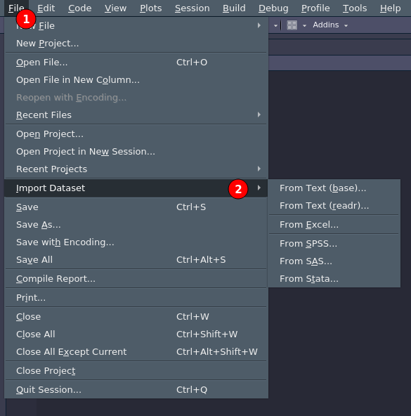

![]()
save.image(file = "data/sessione.RData")Importare i dati in R
Introduzione
Per operazioni semplici o per esercizi si possono creare strutture dati come vettori, liste o dataframe direttamente in R. Tuttavia per lavorare con R è solito importare i dati da fonti esterne come file e database.
In R sono disponibili diverse funzioni per importare i dati nei principali formati come .csv o .txt assieme a diversi pacchetti con funzioni per importare dati nei formati provenienti da altri software come SPSS, Excel, etc. Insomma se esiste un formato specifico probabilmente esiste anche una funzione in R per importarlo.
La logica
A prescindere dal formato specifico, la logica è che un certo tipo di file ha un’estensione che identifica la tipologia come file di testo .txt, comma-separated values .csv, Excel .xlsx. Questo file organizza i dati in un modo specifico e quindi è importante utilizzare la funzione giusta con i giusti argomenti per poter far interpretare ad R i dati in modo corretto.
RStudio
RStudio permette di importare qualsiasi tipo di dato tramite interfaccia grafica. All’inizio può essere utile ma quando si lavora all’interno di uno script è meglio automatizzare tramite comandi qualsiasi operazione sia per salvare che per importare i dati. Potete trovare il menù di importazione con file >. import dataset come in Figura Figura.

Tipi di formato
Le tipologie di formato dati sono tantissime ma possiamo organizzarle in 2 categorie:
formati esterni: sono tutti quei formati non R-specificiformato R: sono quei formati che sono creati da R e direttamente compatibili
Formato R
Partiamo dai formati specifici di R perchè sono quelli più semplici da creare e importare. Il principale difetto è quello che sono appunto leggibili (principalmente) solo all’interno dell’ambiente R. Se abbiamo la necessità di lavorare con software o linguaggi diversi è probabilmente meglio usare un formato più generico.
.RData
Questo è il formato più generico e permette di salvare l’intera sessione di lavoro in un file unico per poi essere eventualmente ripristinata. Non è un vero e proprio formato specifico e corrisponde più a fare una fotografia (~backup) alla sessione di lavoro. In generale non consiglio di usare questo formato ma di lavorare con singoli file da salvare/importare ma in generale più essere utile a volte.
Per salvare si più usare save.image() semplicemente specificando il percorso e il nome del file con estensione .RData:
Per ripristinare la sessione si può usare la funzione load() specificando il percorso del file.
load(file = "data/sessione.RData").rda
Il formato .rda è quello più comune in R e permette di salvare uno o più oggetti all’interno di un unico file per poi ricaricarlo/i direttamente. Il principio è lo stesso dei file .RData ma al contrario del precedente permette di salvare solo alcuni oggetti. Il comando per salvare è save() dove vanno inseriti gli oggetti separati da virgola e poi il nome ed il percorso del file da salvare. Salviamo il dataset iris, un vettore my_vect e la stringa "hello world" dentro un unico oggetto my_obj.rda:
iris <- iris
my_vect <- 1:10
my_string <- "hello world"
save(iris, my_vect, my_string, file = "data/my_obj.rda")Se vogliamo ricaricare questo insieme di oggetti all’interno di R possiamo usare la funzione load() specificando il percorso del file. Gli oggetti saranno non solo caricati ma salvati direttamente nel global environment:
load(file = "data/my_obj.rda")I lati positivi di questo approccio sono l’estrema semplicità nel salvare e caricare i file mentre l’aspetto negativo è che non possiamo cambiare i nomi con cui i file vengono importati.
.rds
Il formato .rds è molto simile al precedente ma leggermente meno flessibile. In particolare è possibile salvare un solo oggetto all’interno di un file .rds. Il lato negativo è quindi che non possiamo salvare una sessione intera di oggetti mentre il lato positivo è che possiamo rinominare l’oggetto quando viene importato. In generale ritengo migliore il formato .rds perchè nonostante la necessità di più file permette una gestione più flessibile di cosa importare e come viene rappresentato nell’ambiente di lavoro. La funzione per salvare è saveRDS() specificando l’oggetto e il percorso/nome e per importare readRDS() specificando il percorso del file. Salviamo il dataset iris come iris.rds:
saveRDS(iris, file = "data/iris.rds")Re-importiamo il dataset iris ma chiamandolo my_iris:
my_iris <- readRDS("data/iris.rds")Come vedete è necessario assegnare <- il risultato ad un oggetto altrimenti non è possibile avere disponibile l’oggetto nell’ambiente di lavoro.
Tabella riassuntiva
| Formato | Estensione | Salvataggio | Importazione | Pro | Contro |
|---|---|---|---|---|---|
| RDS | .rds |
saveRDS(oggetto, file) |
readRDS(file) |
Importando si decide il nome | Un solo oggetto per file |
| RDA | .rda |
save(oggetto/i, file) |
load(file) |
Salvare insieme più file | Carica direttamente i file con i nomi salvati |
| RData | .RData |
save.image(file) |
load(file) |
Salvare tutta la sessione | Carica direttamente i file con i nomi salvati |
Formato esterno
Trattare i formati esterni è sicuramente complicato sia per la differenza tra i vari formati che la quantità di formati diversi. L’idea di base è che solitamente per importare i dati bisogna capire come il formato specifico rappresenta dati, caratteri speciali, elementi che separano un singolo dato dall’altro e così via.
Se prendiamo il seguente vettore x <- c(1,2,3) noi capiamo che x ha 3 elementi essendo la virgola non un dato ma un modo per separare dati. Ecco anche i vari formati hanno delle modalità per separare e organizzare i dati ed R deve capire (lo dobbiamo dire noi) quale modalità specifica è utilizzata nel tipo di dato che stiamo cercando di importare.
.txt
Partiamo dal formato più semplice .txt e proviamo ad importare un singolo vettore da .txt a R come oggetto.
Vediamo il file di testo comma_vector.txt:
1,2,3,4,5,6,7,8,9,10Come vedete ci sono dei numeri separati da virgole. Per leggere questo dato in R possiamo usare la funzione scan(file, sep). In particolare dobbiamo specificare il file ovviamente e l’argomento sep = per specificare quale carattere venga interpretato come separatore:
right <- scan('data/comma_vector.txt', sep=",", quiet = TRUE)
right [1] 1 2 3 4 5 6 7 8 9 10wrong <- scan('data/comma_vector.txt', sep=";", quiet = TRUE)Error in scan("data/comma_vector.txt", sep = ";", quiet = TRUE): scan() expected 'a real', got '1,2,3,4,5,6,7,8,9,10'wrongError: object 'wrong' not foundCome vedete specificando un separatore errato dice a R di importare anche , e ovviamente non è compatibile con il resto dei dati.
Solitamente è inutile importare un singolo vettore ma questo concetto di capire come è codificato il file da importare è alla base di tutti i tipi di importazione.
Un modo più complesso di organizzare i dati sempre nei file .txt è quello di ricreare un vero e proprio dataset. Il file comma_table.txt rappresenta un esempio più realistico (in piccolo) di quello che potrebbe essere un dataset vero da importare:
id, nome, age, corso
1,filippo,20,psicologia
2,andrea,22,ingegneria
3,anna,30,informatica
4,francesca,23,damsCome vedete abbiamo delle stringhe che idealmente rappresentano i nomi delle colonne e poi i dati effettivi. Come in precedenza in questo caso abbiamo la virgola come separatore di dato ma dobbiamo in qualche modo dire ad R che la prima riga non fa parte dei dati sono i nomi delle colonne. Per importare questo tipo di dato possiamo usare il comando read.table(file, sep, header):
read.table("data/comma_table.txt", sep = ",") V1 V2 V3 V4
1 id nome age corso
2 1 filippo 20 psicologia
3 2 andrea 22 ingegneria
4 3 anna 30 informatica
5 4 francesca 23 damsCome vedete R intepreta la prima riga come parte dei dati e aggiunge dei nomi standard per le colonne V1, V2, etc.. Aggiungendo l’argomento header = TRUE diciamo proprio questo a R.
my_data <- read.table("data/comma_table.txt", sep = ",", header = TRUE)
my_data id nome age corso
1 1 filippo 20 psicologia
2 2 andrea 22 ingegneria
3 3 anna 30 informatica
4 4 francesca 23 damsE’ importante notare che il carattere di separazione può essere qualsiasi altro carattere rispetto alla virgola come il punto e virgola ";" o uno spazio " ". E’ solo importante capire il carattere corretto e impostare la funzione di importazione.
.csv
I file csv sono più comuni per gestire dataset sopratutto perchè sono facilmente importabili e creabili da software come Excel. Il nome significa comma separated values perchè in modo simile ai file che abbiamo visto in precedenza si utilizza la virgola "," per separare i dati. Un file csv si presenta in questo modo:
"Sepal.Length";"Sepal.Width";"Petal.Length";"Petal.Width";"Species"
5.1;3.5;1.4;0.2;"setosa"
4.9;3;1.4;0.2;"setosa"
4.7;3.2;1.3;0.2;"setosa"
4.6;3.1;1.5;0.2;"setosa"
5;3.6;1.4;0.2;"setosa"
5.4;3.9;1.7;0.4;"setosa"
4.6;3.4;1.4;0.3;"setosa"
5;3.4;1.5;0.2;"setosa"
4.4;2.9;1.4;0.2;"setosa"
4.9;3.1;1.5;0.1;"setosa"Come vedete il file è estremamente simile al txt che abbiamo importato in precedenza con la differenza che le stringe sono racchiuse tra virgolette. Il comando per leggere file csv è read.csv(file, sep, header) dove il sep = "," predefinito è la virgola (ma si può cambiare) e anche qui dobbiamo specificare il parametro header = TRUE se vogliamo importare la prima riga come nomi delle colonne. Assegnando ad un oggetto come per read.table() avremo in automatico un dataframe.
my_csv <- read.csv("data/csv_example.csv", header = T) # sep di default è virgola
my_csv Sepal.Length.Sepal.Width.Petal.Length.Petal.Width.Species
1 5.1;3.5;1.4;0.2;setosa
2 4.9;3;1.4;0.2;setosa
3 4.7;3.2;1.3;0.2;setosa
4 4.6;3.1;1.5;0.2;setosa
5 5;3.6;1.4;0.2;setosa
6 5.4;3.9;1.7;0.4;setosa
7 4.6;3.4;1.4;0.3;setosa
8 5;3.4;1.5;0.2;setosa
9 4.4;2.9;1.4;0.2;setosa
10 4.9;3.1;1.5;0.1;setosa.xsls
Esistono diverse funzioni per importare file direttamente dal formato Excel. Solitamente è possibile evitare di utilizzare funzioni o pacchetti aggiuntivi semplicemente salvando il file Excel come csv e usare le funzioni di importazione precedenti. Tuttavia a volte è comodo importare direttamente il file nel formato originale. Sono disponibili diversi pacchetti e funzioni:
Il pacchetto readxl con le funzioni readxl::read_excel(), readxl::read_xls() e readxl::read_xlsx(). Rispetto ai csv i file Excel sono più complessi e permettono di avere più “fogli”. Queste funzioni permettono anche di importare un foglio specifico (argomento sheet =) oppure un range specifico nel foglio di destinazione (argomento range =) Excel identifica infatti le righe in modo numerico 1,2,3,4... e le colonne con le lettere dell’alfabeto in modo progressivo A, B, C ...
my_excel <- readxl::read_xlsx("data/excel_example.xlsx", range = "A1:D10")
my_excel# A tibble: 9 × 4
Sepal.Length Sepal.Width Petal.Length Petal.Width
<dbl> <dbl> <dbl> <dbl>
1 5.1 3.5 1.4 0.2
2 4.9 3 1.4 0.2
3 4.7 3.2 1.3 0.2
4 4.6 3.1 1.5 0.2
5 5 3.6 1.4 0.2
6 5.4 3.9 1.7 0.4
7 4.6 3.4 1.4 0.3
8 5 3.4 1.5 0.2
9 4.4 2.9 1.4 0.2In alternativa è presente anche il pacchetto xlsx che permette le stesse funzionalità ma in generale il pacchetto readxl è il migliore. L’unica differenza riguarda la capacità di scrivere quindi creare file excel da un oggetto R. Finora abbiamo solo parlato di lettura di file ma R permette anche di creare tutti i formati che legge. In questo caso il pacchetto readxl permette solo di leggere mentre xlsx anche di scrivere. Il pacchetto WriteXLS come dice il nome invece è specifico per la scrittura di file.
.sav
Il formato .sav è specifico del software SPSS e può essere gestito con il pacchetto haven che permette di leggere e scrivere file in questo formato. In questo caso, in modo simile all’excel, non ci sono particolari opzioni per leggere/scrivere se non specificare il percorso del file.
my_sav <- haven::read_sav(file = "data/sav_example.sav")
my_sav# A tibble: 150 × 5
Sepal.Length Sepal.Width Petal.Length Petal.Width Species
<dbl> <dbl> <dbl> <dbl> <dbl+lbl>
1 5.1 3.5 1.4 0.2 1 [setosa]
2 4.9 3 1.4 0.2 1 [setosa]
3 4.7 3.2 1.3 0.2 1 [setosa]
4 4.6 3.1 1.5 0.2 1 [setosa]
5 5 3.6 1.4 0.2 1 [setosa]
6 5.4 3.9 1.7 0.4 1 [setosa]
7 4.6 3.4 1.4 0.3 1 [setosa]
8 5 3.4 1.5 0.2 1 [setosa]
9 4.4 2.9 1.4 0.2 1 [setosa]
10 4.9 3.1 1.5 0.1 1 [setosa]
# ℹ 140 more rowsElementi comuni
A prescindere dal formato o dalla funzione utilizzata, abbiamo visto che generalmente sono importanti alcune informazioni:
tipo di separatore: ovvero il carattere utilizzato per separare un’informazione dall’altra. Nel caso dei filecsvad esempio è la virgola.NA: quando importiamo dei dati possiamo usare qualsiasi modalità per identificare dati mancanti (in RNA). E’ importante dire alla funzione di importazione in che modo noi abbiamo rappresentato gliNAnel file di origine in modo che vengano gestiti direttamente in R. Se non facciamo questo R intepreterà come dati normali questi valori creando degli ipotetici problemi. Vediamo un esempio:
Immaginiamo di avere il dataset my_iris con dei valori NA:
my_iris <- iris[1:10, ]
my_iris <- filor::add_random_na(my_iris, 10)
my_iris Sepal.Length Sepal.Width Petal.Length Petal.Width Species
1 5.1 3.5 1.4 0.2 setosa
2 NA 3.0 1.4 0.2 setosa
3 4.7 3.2 1.3 NA <NA>
4 4.6 3.1 1.5 0.2 <NA>
5 5.0 NA NA 0.2 <NA>
6 5.4 3.9 1.7 0.4 setosa
7 4.6 3.4 NA 0.3 setosa
8 NA 3.4 1.5 0.2 setosa
9 4.4 2.9 1.4 0.2 setosa
10 4.9 3.1 NA 0.1 setosaOra scriviamo il file come csv specificando un certo tipo di stringa per gli NA:
write.csv(my_iris, file = "data/na_csv_example.csv", na = "NA", row.names = FALSE)Ora vediamo il risultato:
"Sepal.Length","Sepal.Width","Petal.Length","Petal.Width","Species"
5.1,3.5,1.4,0.2,"setosa"
NA,3,1.4,0.2,"setosa"
4.7,3.2,1.3,NA,NA
4.6,3.1,1.5,0.2,NA
5,NA,NA,0.2,NA
5.4,3.9,1.7,0.4,"setosa"
4.6,3.4,NA,0.3,"setosa"
NA,3.4,1.5,0.2,"setosa"
4.4,2.9,1.4,0.2,"setosa"
4.9,3.1,NA,0.1,"setosa"Come vedete abbiamo il dataset e in mezzo dei valori NA. Proviamo a immaginare di non aver creato questo file e dobbiamo importarlo per la prima volta in R:
my_csv <- read.csv(file = "data/na_csv_example.csv", header = TRUE)
sapply(my_csv, typeof)Sepal.Length Sepal.Width Petal.Length Petal.Width Species
"double" "double" "double" "double" "character" Come vedete R interpreta correttamente i valori NA mantenendo il tipo di colonna (quindi non intepretando NA come stringa) perchè è il modo di default di gestione. Proviamo a scrivere un’altro file usando un modo diverso di gestire gli NA:
write.csv(my_iris, file = "data/na_csv_example.csv", na = "NO", row.names = FALSE)Ora gli NA sono rappresentati come NO:
"Sepal.Length","Sepal.Width","Petal.Length","Petal.Width","Species"
5.1,3.5,1.4,0.2,"setosa"
NO,3,1.4,0.2,"setosa"
4.7,3.2,1.3,NO,NO
4.6,3.1,1.5,0.2,NO
5,NO,NO,0.2,NO
5.4,3.9,1.7,0.4,"setosa"
4.6,3.4,NO,0.3,"setosa"
NO,3.4,1.5,0.2,"setosa"
4.4,2.9,1.4,0.2,"setosa"
4.9,3.1,NO,0.1,"setosa"Infatti se importiamo con la stessa funzione abbiamo un risultato strano:
my_csv <- read.csv(file = "data/na_csv_example.csv", header = TRUE)
my_csv Sepal.Length Sepal.Width Petal.Length Petal.Width Species
1 5.1 3.5 1.4 0.2 setosa
2 NO 3 1.4 0.2 setosa
3 4.7 3.2 1.3 NO NO
4 4.6 3.1 1.5 0.2 NO
5 5 NO NO 0.2 NO
6 5.4 3.9 1.7 0.4 setosa
7 4.6 3.4 NO 0.3 setosa
8 NO 3.4 1.5 0.2 setosa
9 4.4 2.9 1.4 0.2 setosa
10 4.9 3.1 NO 0.1 setosasapply(my_csv, typeof)Sepal.Length Sepal.Width Petal.Length Petal.Width Species
"character" "character" "character" "character" "character" Tutte le colonne sono intepretate come stringhe perche "NO" è gestito come tale. Per importare correttamente dobbiamo specificare la stringa giusta:
my_csv <- read.csv(file = "data/na_csv_example.csv", header = TRUE, na.strings = "NO")
my_csv Sepal.Length Sepal.Width Petal.Length Petal.Width Species
1 5.1 3.5 1.4 0.2 setosa
2 NA 3.0 1.4 0.2 setosa
3 4.7 3.2 1.3 NA <NA>
4 4.6 3.1 1.5 0.2 <NA>
5 5.0 NA NA 0.2 <NA>
6 5.4 3.9 1.7 0.4 setosa
7 4.6 3.4 NA 0.3 setosa
8 NA 3.4 1.5 0.2 setosa
9 4.4 2.9 1.4 0.2 setosa
10 4.9 3.1 NA 0.1 setosasapply(my_csv, typeof)Sepal.Length Sepal.Width Petal.Length Petal.Width Species
"double" "double" "double" "double" "character" Dati
Potete scaricare i dati usati in questo documento di seguito: